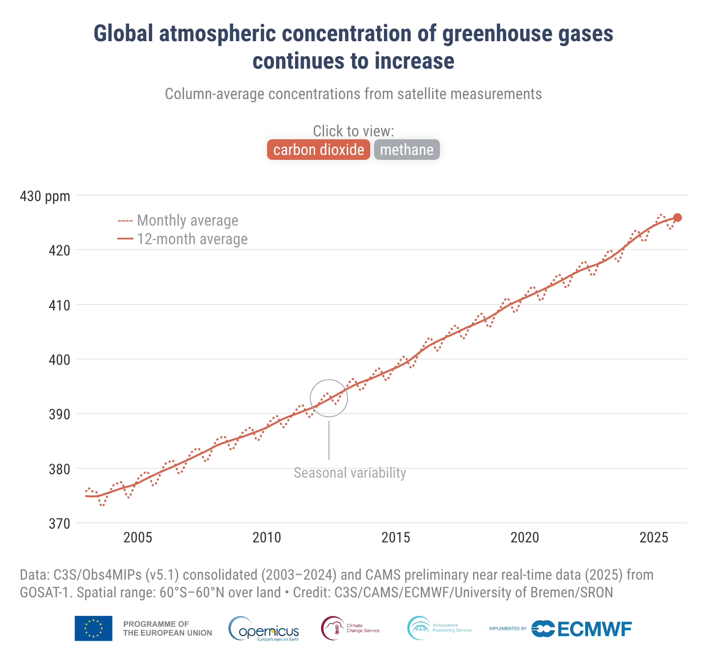

INICIAR FASE 2

378
425
α
LOUSA DE CÁLCULOS
TEXTO
DESENHO
APAGAR
y = a
x
+ b
y
é reescrito como
C(t)
·
x
é reescrito como
t
C(t) = a
t
+ b
C(t)
= concentração de CO₂ em função do tempo
t
= tempo, em ano calendário
a
= coeficiente angular (taxa de variação), que você já calculou
b
= valor inicial da concentração de CO₂
GAIA - DESAFIOS DE MODELAGEM
INICIAR DESAFIO
RESOLUÇÃO DO MODELO
Continuar >>
DESAFIO
VOLTAR
CONTROLE GLOBAL DE EMISSÕES
O controle está nas suas mãos. Zere as emissões de CO
2
.
Queimadas antrópicas
Indústrias
Combustíveis fósseis
INICIAR MISSÃO OCEANO